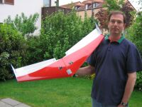

2003, Zagi, Profil ZAGI, nach einer Zeichnung aus dem Internet mit 1 m Spannweite.
Irgendwie hatte ich mal wieder Lust etwas fliegbares zu bauen. Angeregt durch einen Arbeitskollegen, wir wollten ein Modell mit geringem Bauaufwand zusammen herstellen, schnitt ich, nach dem Zagi-Plan aus dem Internet, den Flügel aus Styrodur. Wir hatten so viel über Zagis aus EPP gelesen, die waren uns aber für den vorgesehenen Zweck zu teuer. Außerdem wollten wir einen Flieger, der auch in den Rucksack passt, also zerlegbar ausgeführt werden musste.
Der Jahresurlaub stand bevor und die Fertigstellung des Zagi geriet unter Druck. Den Styrodurkern des Flügels habe ich dann einfach mit 110 gr. Glassmatte und Epoxydharz belegt, mit Füller gestrichen, geschliffen und lackiert. Die Ohren sind mit einer Kunststoffschraube und doppelseitigem Klebband befestigt.
Auch bei diesem Nurflügler tritt das bekannte "wackeln" auf, man sollte darauf bedacht sein die V-Form eher auf der negativen Seite zu halten. Für mich ist der Zagi als Abwechslung O.K. aber insgesamt zu nervös zu fliegen. Fliegt man weiter weg, ist nichts mehr zu sehen, am Hang in der Nähe des Piloten kann man dafür die tollsten Figuren zaubern. Leider ist der Zagi durch die Materialwahl nicht sehr widerstandsfähig gegen Landeschäden, was kann man denn für 5 € Materialkosten auch schon verlangen, vielleicht gibt's doch noch mal einen aus EPP?